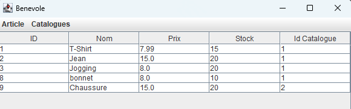

Informations sur ce projet
Période : Du 04/11/24 au 20/12/24
Langage utilisé : Java
Travail : En groupe de deux
Introduction : Ce projet est une application Java avec pour architecture MVC, ce dernier sera éxécuté dans l’environnement de développement (IDE Eclipse).
Description des besoins :
- Rôle Maire : consultation des catalogues et des statistiques de ventes proposées.
- Rôle Secretaire :création des nouvelles ventes et consultation de l’historique des catalogues..
- Rôle Benevole :enregistrements des articles à vendre et consultation du catalogue.
Bilan personnel : Ce projet m'a permis de pouvoir développer davantage mes compétences Java car j'avais des difficultées, mais aussi j'ai pu m'améliorer aussi en MVC. En somme ce projet a été plutôt long a faire mais surtout enrichissant pour moi.
Quelques Illustrations du projet :
Illustration de la consultation des catalogues pour le Maire :
Illustration de la consultation des statistiques de ventes proposées pour le Maire :
Illustration de la création de nouvelles ventes pour le Secretaire :

Illustration pour la consultation de l'historique des catalogues pour le Secretaire :
Illustration pour l'enregistrement des articles à vendre pour le Benevole :
Illustration pour l'affichage des articles pour le Benevole :
